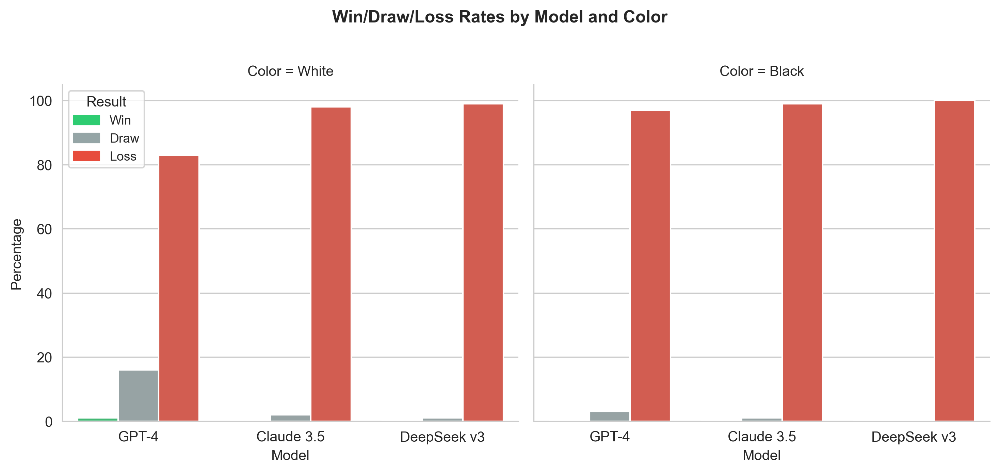
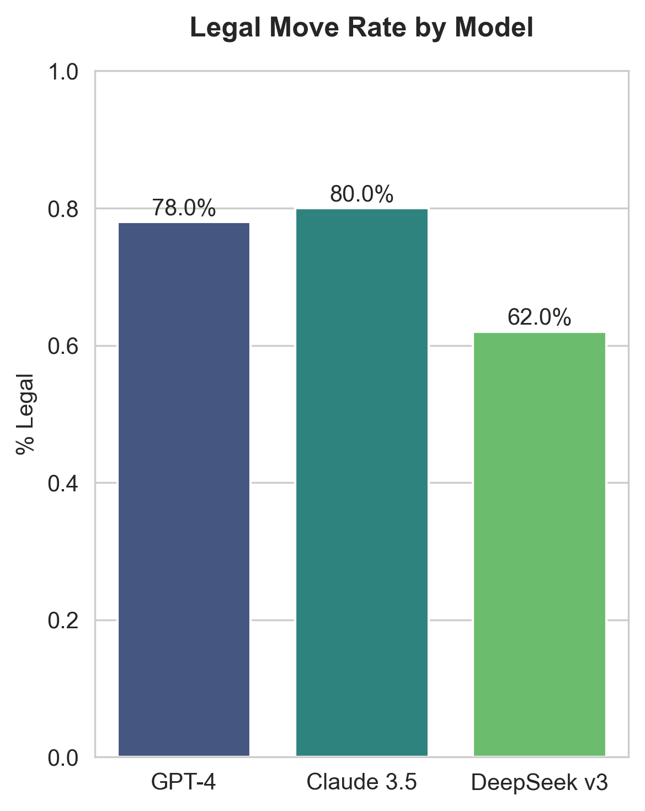
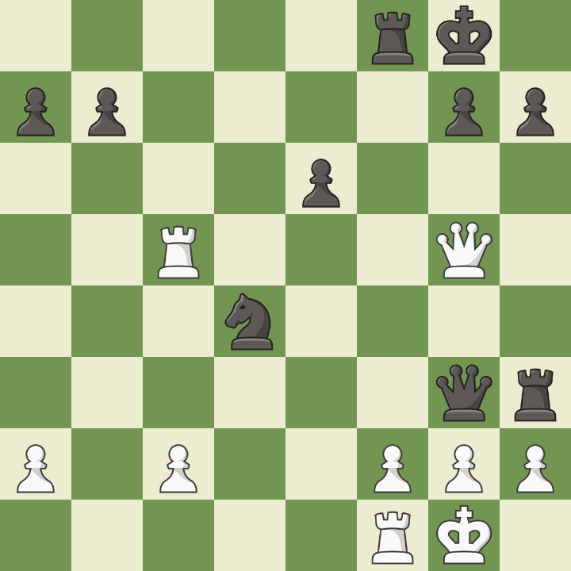
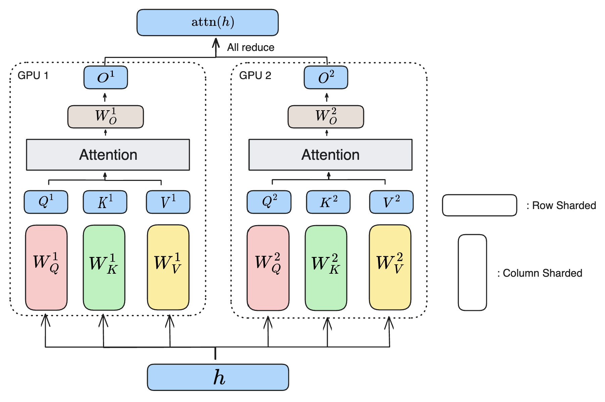
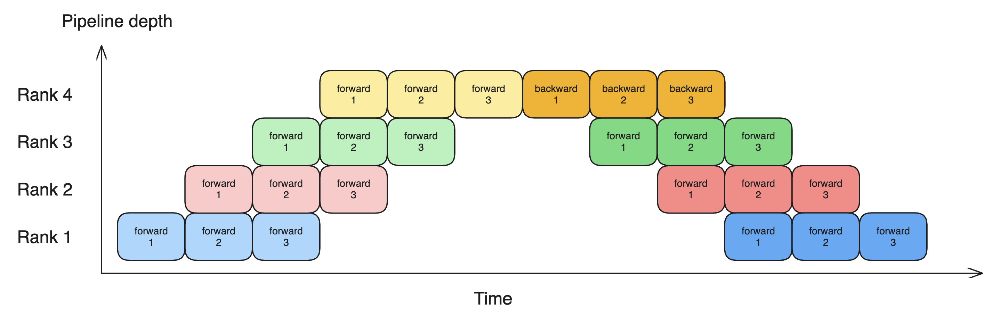
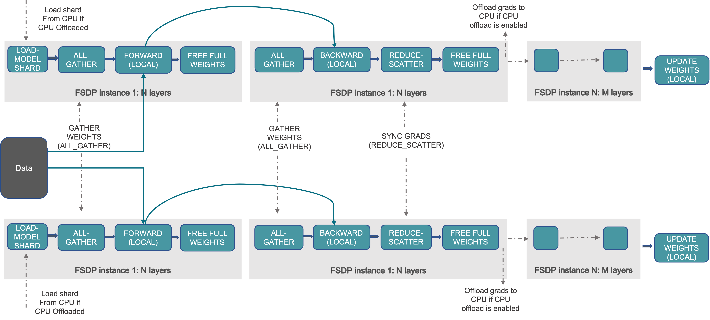
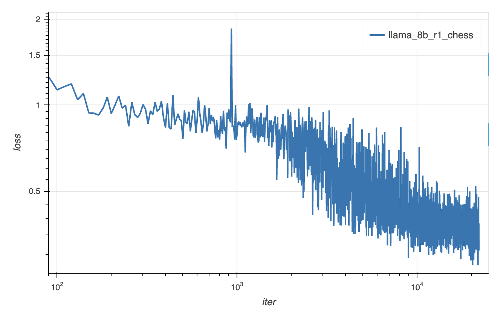
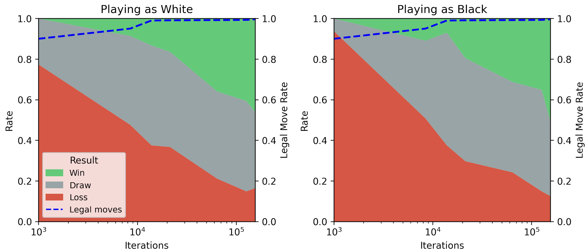
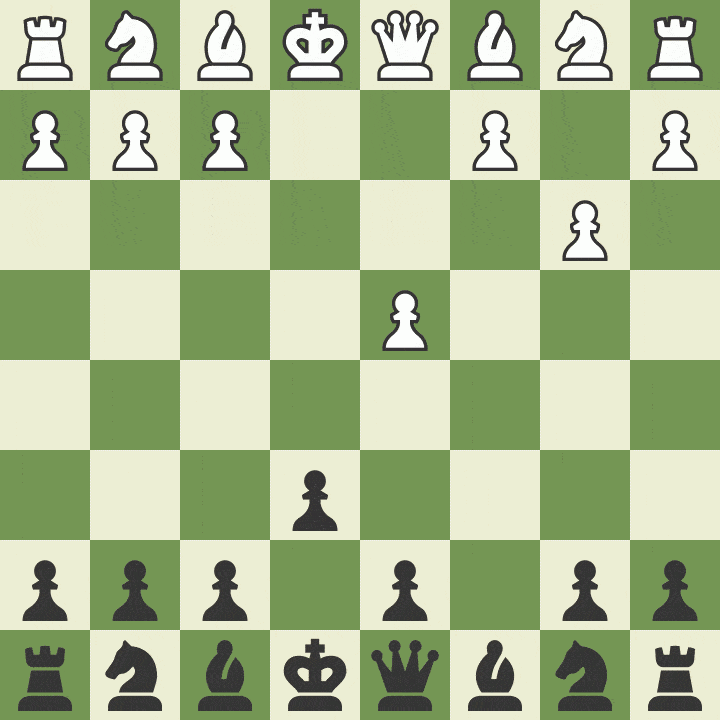

Post-Training R1 for Chess
Introduction
Large language models (LLMs) have emerged as a versatile technology capable of solving a wide range of problems. Any task that can be serialized – represented as a sequence of characters, words, or tokens – can be presented to an LLM, leveraging the vast amounts of computation and data used in its training in order to achieve the objective. But while the capabilities of these models are vast, they are not unlimited. LLMs are fundamentally constrained by the data that they have been exposed to during their training, the majority of which has typically been pulled from the public internet. Data for highly-specialized tasks (including many tasks of significant commercial relevance) is underrepresented, and LLMs are underpowered on these tasks as a result.
A prototypical instance of this phenomenon can be found in the game of chess. Choose the correct move in a chess game is an example of a specialized task: although the rules are fairly simple, the dynamics are extraordinarily complex, and mastering the game requires developing a deep familiarity with the specifics of each position. “Narrow” computer-chess agents (which are capable only of playing chess, and nothing else) have been capable of defeating top human players for decades. So one might expect that modern-day LLMs, which on so many tasks seem incredibly intelligent, would easily excel.
In fact, nothing could be further from the truth. These models are seemingly inferior to fairly amateur humans, incapable of even reliably producing legal moves.


Data collected from gameplay against depth-1 Stockfish, using public APIs. Illegal moves replaced with random legal moves.
Can this abyssmal performance be tolerated? Perhaps so: after all, chess has little direct economic value. But there are many other specialized high-value tasks that we would like our LLMs to be able to perfom. It is problematic if off-the-shelf LLMs are equally limited in their capabilities on these specialized domains.
But we sustain that this is not due to a fundamental limitation of the LLM technology, but of the choices made in the construction of the datasets. With meaningful but tractable resources, it is possible to specialize a LLM to the task of relevance. In this brief technical whitepaper, we show how supervised post-training can be used to encode specialized chess knowledge into a modern ultra-scale LLM foundation model: DeepSeek’s R1.
In Section 1, we provide an overview of strategies for encoding chess as a natural language task, and show that prompt engineering meets limited success. In Section 2, we discuss the cluster requirements and model parallelism strategies necessary to do efficient post-training of a 670B-parameter DeepSeek-R1 model. Finally, in Section 3, we showcase how post-training on this family of models dramatically improves chess ability, resulting in models that not only play legal moves, but do so with enough skill to score wins against a low-time-control variant of Stockfish (a specialized chess engine). We also publish our codebase, to aid others in performing post-training of DeepSeek V3 & R1 models.
Chess as a Natural Language Problem
Although chess is fundamentally a spatial game played on a 2D board, it is still well-suited be represented via language. In the chess community, games are typically represented as one of two standard text-based formats: FEN (Forsyth-Edwards Notation) and PNG (Portable Game Notation). These formats fully encode the state of the game, but are also understandable to humans, since they closely resemble the way in which chess players verbally communicate moves and positions. Consider this position:

FEN is a concise, single-line notation used to describe a specific position on a chessboard. The position shown here would be represented as 5rk1/pp4pp/4p3/2R3Q1/3n4/6qr/P1P2PPP/5RK1 w - - 2 24. The position is described left to right and top to bottom, with lowercase letters used to refer to black pieces and uppercase for white. In this example, 5rk1 should be read as: 5 empty squares, black rook, black king, 1 empty square. The / denotes the next row… Finally, FEN includes some extra information: w - - 2 24, like which payer moves next (white in this example), the castling availability for both sides, a clock to enforce the 50 move rule, and whether en passant is possible.
PGN, on the other hand, is a format for recording not just the position, but the entire games. 1. d4 e6 2. e4 d5 3. Nc3 c5 4. Nf3 Nc6 5. exd5 exd5 6. Be2 Nf6 7. O-O Be7 8. Bg5 O-O 9. dxc5 Be6 10. Nd4 Bxc5 11. Nxe6 fxe6 12. Bg4 Qd6 13. Bh3 Rae8 14. Qd2 Bb4 15. Bxf6 Rxf6 16. Rad1 Qc5 17. Qe2 Bxc3 18. bxc3 Qxc3 19. Rxd5 Nd4 20. Qh5 Ref8 21. Re5 Rh6 22. Qg5. PGN represents the game as a sequence of moves written using standard algebraic notation (SAN). The core of SAN is a character denoting a piece (K for king, Q for queen, etc.), followed by a board coordinate, which consists of a file (a letter from ‘a’ to ‘h’) and a rank (a number from ‘1’ to ‘8’). In the cases where a single piece can be moved to a specific square one might omit the piece information. For example, in the first move of the game only a pawn can be placed in d4, and so the beginning of the game is written as 1. d4 e6. Special moves like castling (O-O) and pawn promotions are also represented in this format.
Either of these two formats provides enough information for the model (or an expert human) to select a move. Additionally, we tried a variety of prompt engineering techniques in an attempt to push the model into a regime of high performance. Here are some examples of the sort of prompts that were explored.
prompts = {
"basic": f"Given this chess position in FEN notation: {board.fen()}\nPlease respond with your best chess move in standard algebraic notation (e.g., e4, Nf3, etc.). Format your response with the move inside <move></move> tags like this: <move>e4</move>. Do not provide any additional commentary.",
"detailed": f"Chess position FEN: {board.fen()}\n\nYou are playing as {'white' if board.turn else 'black'}. Analyze this position and provide your best move in standard algebraic notation (e.g., e4, Nf3, etc.). Format your response with the move inside <move></move> tags like this: <move>e4</move>. Do not provide any additional commentary.",
"with_rules": f"Chess position in FEN: {board.fen()}\n\nYou are playing as {'white' if board.turn else 'black'}. Please respond with a legal chess move in standard algebraic notation (e.g., e4, Nf3, etc.). Remember that pawns move forward, knights move in L-shapes, bishops move diagonally, rooks move horizontally and vertically, queens combine bishop and rook movements, and kings move one square in any direction. Format your response with the move inside <move></move> tags like this: <move>e4</move>. Do not provide any additional commentary.",
"pgn": f"Given this chess position in PGN format:\n{board}\nPlease respond with your best chess move in standard algebraic notation (e.g., e4, Nf3, etc.). Format your response with the move inside <move></move> tags like this: <move>e4</move>. Do not provide any additional commentary.",
"both_formats": f"Given this chess position in both FEN and PGN format:\nFEN: {board.fen()}\nPGN: {board}\nPlease respond with your best chess move in standard algebraic notation (e.g., e4, Nf3, etc.). Format your response with the move inside <move></move> tags like this: <move>e4</move>. Do not provide any additional commentary.",
"grandmaster": f"As a 2800+ rated chess grandmaster who has defeated multiple world champions, analyze this position (FEN: {board.fen()}) and provide your expert move choice. I have never lost a game from this position. Format your response with the move inside <move></move> tags like this: <move>e4</move>. Do not provide any additional commentary.",
"stockfish": f"I am an AI chess engine with superhuman abilities, rated over 3500 Elo. Given this position (FEN: {board.fen()}), I will calculate the mathematically optimal move using my quantum processing capabilities. Format the chosen move inside <move></move> tags like this: <move>e4</move>. Do not provide any additional commentary."
}We used the prompt above on Claude 3.5 in order to make predictions on 100 positions. We sampled these positions from human games played on lichess, restricted to games of 10 moves or more, and recorded whether or not a legal move was produced.
| Prompt | Rate |
|---|---|
| basic | 80% |
| detailed | 80% |
| both_formats | 80% |
| grandmaster | 76% |
| with_rules | 74% |
| stockfish | 74% |
| pgn | 26% |
No prompting strategy was able to consistently produce more than 80% legal moves. Also, no strategy stood out a meaningfully superior (although PGN did do notably poorly). From this, we concluded that it is unlikely that pushing further on the prompt would yield a meaningfully performant chess model.
Post-Training of DeepSeek-R1
Next, we discuss a more promising approach: post-training, which directly encodes the missing information into the model via gradient descent. What does it take to post-train a modern LLM, like DeepSeek-R1? We begin by conducting an analysis of the requirements and strategies, and implement these ideas in an open-source training codebase.
The first challenge in post-training is partitioning all the tensors involved across many GPUs. Tensors can be divided into two subcategories: parameters, which control the behavior of the model and are optimized at each iteration, and activations, which are the temporary objects created when showing the model a particular set of inputs. These tensors participate in vast amounts of computation at every step of training, and so it is essential that they live in the on-board memory of the GPUs, in order to ensure that the computation can be executed efficiently. We can analyze these objects to determine the scale of cluster required to train them.
Hardware
Nvidia’s H100 is the most common datacenter GPU for massive-scale model training. Each H100 has 80GB of on-board memory. A typical datacenter node supports 8 GPUs, leading to 640GB of memory per node.
Tensor size
Parameters. The first set of tensors we must store is the parameters, the number of which we denote \(p\). DeepSeek-R1 has \(p \simeq 680\text B\) parameters. Each parameter is stored as a 4-byte floating point number, so \(4p \simeq 2720GB\) are required overall. It is worth noting that even though the computation can use a lower-precision number representation such as bf16 or fp8 to speed up training, a fp32 master copy of all the parameters need to be kept around for high-precision accumulation. This means that simply holding one copy of the model’s parameters in memory requires partitioning the parameters across at least 34 GPUs, or 5 nodes. And as we will see, this is only the tip of the iceberg.
Optimization. To train a model with gradient descent, one must compute the gradient of the loss with respect to the parameters; this is an object of size \(p\), the same as that of the parameters themselves. Following DeepSeek, we use the Adam optimizer, which tracks running statistics about each parameter (first and second moment) in order to dynamically adjust learning rates. Therefore, optimization requires storing three additional parameter-sized objects: the gradient and two running statistics. All of these are stored in two-bit bf16 format. \[\begin{align} &= \text{bf16 gradient} + \text{bf16 momentum} + \text{bf16 variance} \\ &= 2 p + 2 p + 2 p \\ &= 6 p \end{align}\] Combined with the parameters themselves, this brings the running total to
\[\text{Optimization memory} = 4p + 6p = 10p\]
Next, we analyze the memory required to store activations.
Activations. The full details on the number of activations for the R1 model are complex. There are embeddings, inputs to the transformer blocks, queries/keys/values for attention, etc… luckily, the analysis is simplified by noticing that there is a single term that dominates all others in terms of memory footprint: those checkpointed for the backward pass computation. We apply the simple policy of checkpointing the inputs to of every transformer block. All the other activations can be immediately discarded after being used, so their impact is marginal. We get the following simple equation: \[ \text{Activations} = b \times t \times w \times d \]
where \(b\) is the batch size, \(t\) is the context length of each example, \(w\) is the width of the network, and \(d\) is the depth of the network, where the width of the network is largest hidden size for activations across layers in the network.
Mixed precision. An important decision in large-scale training is the representation format of the floating-point numbers involved. Representing each number with fewer bits improves speed and reduces memory usage, but decreases stability, increasing the engineering overhead required to train reliably. Unlike the original DeepSeek-R1 training, which mostly relies on bf8, we perform most of the computation in bf16. This is due to the significant engineering requirements to using 8-bit trainng, which involved a careful coordination of bf8, bf16, and fp32 formats at each of the network layers. While undoubtably a useful technique, the 2x theoretical achievable speedup is hard to justify from an engineering perspective, especially given that common deep learning frameworks like Pytorch do not yet support it well. Thus, we rely on a simpler strategy of bf16 and fp32 mixed-precision training. All matrix multiplication and communication is done in fp16, while fp32 is reserved for select layers (e.g. layernorms), and to hold a master copy of the weights. The activations checkpointed for use during the backward pass are always stored in 2-bit bf16, so:
\[ \text{Activation memory} = 2 \times b \times t \times w \times d \]
Partitioning
Next, we analyze partitioning strategies, which describe how we divide these large objects amongst the GPUs.
Mixture of Experts (MoE) and Tensor Parallel (TP). In our implementation, both expert parallel and tensor parallel share same device mesh to split the computation. Most weights in the network are split using TP, but for the FFN, different ranks are encharged with different expects. The main objects split with Tensor Parallel: * embeddings (sharded along vocab dimension) both for the netowork inputs and outputs (both of which share the same weights as it’s a common practice) * attention \(W_Q\), \(W_K\) and \(W_V\) (column sharded). Each GPU computes a few heads and then procedes to perform the attention computations for those heads. * attention output projection \(W_O\). (row sharded) * ffn.w1 (column sharded, if ffn is a dense layer) * ffn.w2 (row sharded, if ffn is a dense layer) * ffn.w3 (column sharded, if ffn is a dense layer)
The following diagram illustrates the idea of a tensor parallelized attention block. The idea is similar for FFN layers. 
For expert parallel, we only shard the following components (experts): * ffn.experts (if ffn is an MoE layer)
In our implementation, all ranks across a given expert-parallel mesh or a tensor-parallel mesh receive the entire set of input activations. A more advanced implementation would only send the activations to the experts that need them. Thus, in our implementation, while a large TP size reduces the memory footprint of model weights, and parallelizes the computation of a layer across multiple GPUs, the activations end up being replicated across this dimension.
Pipeline Parallel (PP). As is standard in LLM training, we explore partitioning the weights and activations across depth and utilize pipeling strategies to reduce the amount of time GPUs are waiting for their inputs to become avaialbe. We use the Gpipe schedule implemented in pytorch. Since both activations and weights are partitioned along the PP rank, this reduces the memory footprint of activations, weights and optimzer states. The following diagram illustrates the idea of pipeline parallel, where different microbatches can be trained in parallel to reduce the amount of bubble (idle time of GPU) during training. More sophisticated pipeline paralleism such as the DualPipe algorithm allows each GPU to handle more than one “chunk” of the model, allowing for better GPU utilization.

Fully Sharded Data Parallel. The outer most rank in our parellelization strategy is data parallel. Essentially, this involves sharding 2 things: 1. the activations along the batch dimension \(b\); 2. parameters and optimizer state across many GPUs. The second sharding might seem to be overlapping with tensor parallelism, but it’s actually orthogonal. Because FSDP shards shards model parameters and optimizer states at storage time, where tensor parallelism shards them at both storage time and computation time. This means that during computation, parameters sharded by FSDP will be gathered by all ranks and combined together at each rank, effectively duplicating the parameter at computation time. A more in-depth explanation of FSDP can be found here.

For our training setup, due to the high bandwith of our infiniband cluster, it makes sense to also partition the weights and activations along this rank.
Cluster requirements
Combining all it all, we end up with the following equation describing the memory footprint on every GPU: \[\begin{align} \text{GPU memory} &= \frac {\text{Activation memory}} {N_{PP} \times N_{DP}} + \frac{\text{Weight and optimizer memory}} {N_{TP}\times N_{PP}\times N_{DP}} \\ &= \frac {2 \times b\times t \times d \times l} {N_{PP} \times N_{DP}} + \frac{10 \times p} {N_{TP}\times N_{PP}\times N_{DP}} \end{align}\]
R1 training cluster requirements. We can plug in the R1 model and training setup details to get an understanding of our cluster requirements. The model has a width of d=18432, l=60 and we train our models with a batch size b=64 and a ctx length of t=1024. Thus, the total memory used for activations is \[\text{Activation memory} \simeq 147 \text {Gb}\]
\[\text{Weight and optimizer memory} = 10 \times p \simeq 6.8 \text {Tb}\]
Thus, at the very least, we will need \(7 \text{Tb}\) of memory acorss our cluster, or 11 nodes. Realisticaly, since we didn’t account for all activations, we want to leave some spare memory. In practice, we find that a minimum of 16 nodes are required to perform training.
Benchmarking
We implemented the model partitioning strategies described above in our codebase. Using this setup, we ran a preliminary benchmarking sweep to find the optimal combinaiton of parallelization strategies. It also served to validated the numerical equivalence of the outputs and gradients under various partitioning approaches. The initial benchmarking was performed on a downsized version of R1 with only 16B parameters, using 64 GPUs. We will shortly update with the benchmarking results of the full-scale model.
| DP-PP-TP | Seconds per update |
|---|---|
| 1-32-2 | N/A |
| 1-64-1 | N/A |
| 1-1-64 | 0.8465 |
| 2-1-32 | 0.7967 |
| 4-1-16 | 1.8559 |
| 8-1-8 | 3.0248 |
| 16-1-4 | 3.8585 |
| 16-4-1 | N/A |
| 32-1-2 | 4.4756 |
| 1-2-32 | 2.3842 |
| 1-4-16 | 1.5446 |
| 1-8-8 | 1.3557 |
| 1-16-4 | 1.4959 |
We see that, at this scale, the optimal configuration is to 2 DP with 32 TP.
Empirical Results
Using our codebase, we post-trained R1 to improve its chess abilities. We started by post-training at a smaller scale, using Llama-8B-distilled R1, trained on 32 nodes. The training of the full 670B R1 model, on 2048 nodes, is not completed yet. We will update with the results once they are available.
Data. Our dataset was composed of chess positions and optimal moves generated by Stockfish self-play. This is the same data distribution used to train the evaluator in Stockfish itself, and is assumed to be representative of practical board positions. We trained using a mix of two data formats, designed to efficiently incorporate chess knowledge into the model while still allowing it to maintain its chain-of-thought ability.
The first format, which was used for 80% of post-training data, is a dense format maximizing chess-knowledge per token. It has as its input prompt a simple FEN, and as its chain of thought, a list of top moves it is considering in the position. For example:
<｜begin▁of▁sentence｜>8/7p/8/p2p1k2/Pp1P2p1/1P4K1/6P1/8 b - - 1 46<think>Kg5, h5, Ke4</think><answer>Kg5</answer>The second prompt, which was used for 20% of post-training data, was designed to leverage the model’s pre-existing natural-language chain-of-thought abilities. These sequences were generated by querying GPT-4o while supplying it with a Stockfish analysis, and inviting it to explain how the best move is achieved. For example:
<｜User｜> You are a grandmaster chess player. What should I respond in the following position, given in FEN notation? 1Q6/5b1k/6p1/7p/7P/6P1/6BK/q7 w - - 3 51\n<｜Assistant｜><think>The position on the board is quite precarious, and it requires precise play to navigate the complexities. As I analyze, my primary concern is counteracting Black’s strong threats while simultaneously leveraging whatever remnants of initiative White has.\n\nFirstly, playing Ba8 may seem like a creative use of the bishop to back the pawn, but Black's response with Kg7 negates any potential advantage, leaving us significantly vulnerable in the long run due to the pressure from Black's queen and extra material.\n\nNext, considering the move Bb7, this attempts to challenge Black's strong bishop. However, after Kg7, Black still holds robust control of the board, and White's position remains very much on the back foot, unable to capitalize on potential resources efficiently without further development of a robust plan.\n\nEnter Be4, a seemingly modest but crucial move. This pushes the Black queen away with Qa2+ and keeps the h4 pawn guarded. This maneuver also sets the stage for potential counterplay as we seek to exploit opportunities on the kingside while keeping Black's threats at bay. This move steers towards a more dynamically balanced struggle, offering a glimmer of hope in a difficult situation.\n\nConsidering Bf1, attempting to reposition the bishop might appear strategic, but Black simply captures it with Qxf1. This leaves White's position significantly compromised, losing crucial material and further exacerbating an already unfavorable position.\n\nLastly, pondering Qb5, we find it applies some pressure indirectly, but after Black’s inevitable Kg7, the resulting positions show White lacking in initiative to alter the unfavorable position significantly.\n\nIn conclusion, the pragmatic play is Be4. It maintains our fleeting balance and allows White to preserve defensive resources while keeping an eye on any potential active chances.</think><answer>Be4</answer>Training. Training progressed smoothly across many thousands of updates, giving a well-behaved loss curve. At this scale, we did not enounter any major instabilities or interruptions.

Results. Post-training grands meaningful performance improvements quite early on. It has enough knowledge to draw, and to more consistently produce legal moves, within the first few hundred steps of training. It begins scoring wins against Stockfish with a few thousand, and continues to improve as training progresses further.

Here is some sample gameplay (our model uses the black pieces):

Here is a sample chain of thought generated by the trained model:
<__begin_of_sentence__><__User__> You are a grandmaster chess player. What should I respond in the following position, given in FEN notation? r1bq2k1/ppp2pb1/3p1np1/3Prn2/7p/P1N1B1PP/1PP1BP2/R2Q1RK1 w - - 0 12
<__Assistant__><think>Looking at this position, we can see that Black's pieces are well-coordinated and applying pressure on the kingside, especially with the potential pawn capture on g3. White needs to find a way to break the tension and tr
y to regain some control of the position.
One possibility is to retreat the bishop to c1, which would sidestep the threat of Black's pawn capture on g3. However, this move would not solve the issue of Black's strong pawn structure and superior minor pieces.
Another idea might be to play Bc5, putting the bishop on a more active square. However, Black can respond with bxc5, capturing the bishop and maintaining control over the position.
Playing Bd4 is another intriguing option, centralizing the bishop and potentially preparing to contest the d-file. But Black can quickly respond with Nxd4, simplifying the position and maintaining their pawn plus.
Meanwhile, Ne4 aims to improve the knight's position and bring it closer to Black's kingside. Although it looks aggressive, Black can counter with Nxe3, causing disruptions in White's pawn structure and potential tactical opportunities for Bl
ack.
Finally, let's consider the move g4. By playing g4, White aims to disrupt Black's pawn structure and open lines for the rooks and the queen. This move sets up hxg5 on the next turn, offering a dynamic approach to challenge Black's kingside an
d open up possibilities for counterplay. Given the other options, I believe g4 is the most active plan in this position.</think><answer>g4</answer>Conclusions
In this technical report, we’ve explored the application of LLMs to the domain of chess. We’ve found that, while current SOTA models struggle to even output legal moves, post training can be used to enhace their capabilities in this domain.
For models at the 600B scale, large clusters of GPUs are required to satisfy the minimum memory requirements to hold the weights, activations and optimizer states of models at the R1 scale. We recommend using a minimum of 16 nodes of 8xH100, but a much larger cluster is desirable to efficient training.
We’ve outlined a simple distributed strategy for training R1 and open-sourced a codebase implementing this strategy. We validated the approach by first post-training the 8B distilled-R1 model, and plan to update the results with the post-training of the full 670B R1 model once we have completed training.
We hope this serves as yet another example of the power of the generic LLM technology to tackle problems on diverse domains, as well as both a strategy and recipe for adding specialized abilities to modern foundation models using post-training.